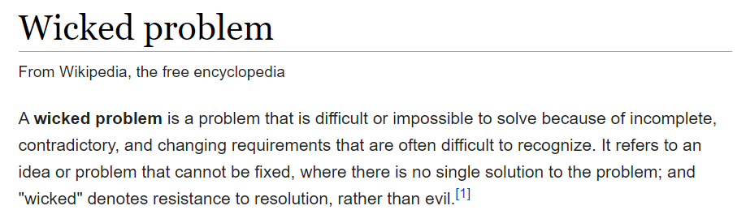
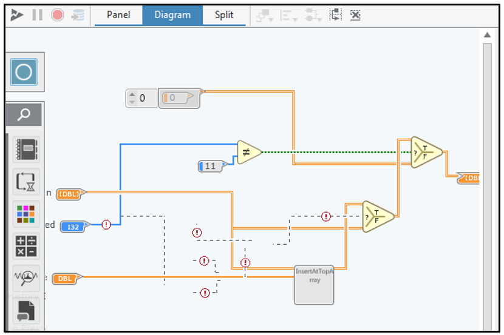
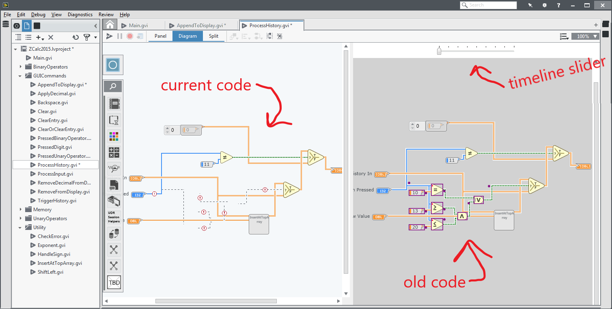
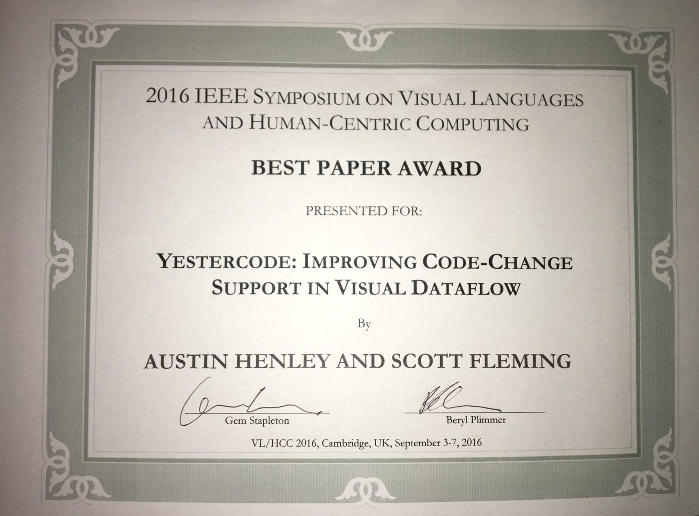

I work on AI + dev tools.
See the discussion of this post on Hacker News.
I've found that the most rewarding problems to work on are the ones that people don't even know they have [yet].
Academia is sometimes a good place for this type of work: investigate a fuzzy problem, nail down what the problem actually is, and devise solutions.
But I've surprisingly had the most opportunities to work on these problems at internships!
My research internships shocked me because they expected me to tell them what I was going to work on. They gave me a crazy amount of freedom in order to do this. I got shockingly comfortable with wandering the office buildings and asking senior employees in other divisions for their time. As long as I could periodically show value, my mentors gave me free reign. (I've previously written about the benefits of doing 5 internships during grad school.)
I think this is a lot of what a startup does too. Not only are you coming up with the solution space, but you have to come up with the problem space too.
I want to tell a story from one of my internships. I started down a route to solve a problem that the business believes they have, only to realize that there is a different and much bigger problem, but after several twists and turns I was able to come up with a collection of solutions.
The story set the stage for how I approach problems for the rest of my career thus far.
I was invited to join National Instruments in Austin, Texas to investigate automated refactoring in the LabVIEW programming language. There was some evidence that manually refactoring was difficult, so I was told that the language needs tooling for refactoring much like other languages (e.g., Eclipse supported dozens of automated refactorings for Java). The open question was how do known refactorings for traditional programming languages apply to a visual dataflow programming language.
The first thing I did was go and talk to people using LabVIEW. Apparently this isn't a common approach to investigating problems? Anyway, I conducted 50-something interviews with engineers, designers, and managers across many different teams. Each time I started with open-ended questions like "What did you usually work on?" and "What barriers have you faced while using LabVIEW this week?" and "What features could assist you in that task?".
Over half the people I spoke to said something like "I prefer to start from a blank slate" rather than modify existing code. At one point it creeped me out how perfectly some of these people would say the same thing. A manager described modifying existing code as a “million dollar problem” because her team spends time each day rewriting similar but different programs from scratch, and then they ultimately “throw away the code”.
I thought I was onto something.
But when I asked why modifying code was so difficult, I didn't get much. Reasons included it is "just easier" to write code from scratch, it is too tedious or time consuming to edit, or it was difficult to understand how the code worked. It certainly is true that reading and writing visual code is different than traditional textual languages, but surely there was more to this problem.
Next I brought a handful of LabVIEW programmers into a lab and recorded them as they worked on some open-ended refactoring tasks. I observed all of them show signs of frustration. It was indeed tedious manually refactoring the code, but not for the reasons I thought. One notable scenario that occurred several times is that they would be in the middle of a code change and need to see what the code looked like prior to them messing it up. Another is that they would repeatedly get confused about what each wire represents (wires in LabVIEW is how data is passed between functions and control structures). To try to understand what was going on in their head, I asked them to speak aloud as they worked and at the end of the session I played back their video to them and asked questions about each major code change they made (e.g., "why did you abort making this change?" or "what about making this change was difficult?").
The programmers used some pretty interesting strategies to overcome not remembering how the original code worked: they'd excessively use undo/redo to flip back and forth between the current state and the original state of the code (other researchers have found that Java developers do this backtracking behavior too! A lot.), they'd copy and paste the code block prior to modifying it, or they'd screenshot the code to use as a reference!
I also asked 9 other engineers if I could come sit behind them as they were coding. Oddly enough they agreed, and even seemed eager to have someone witness their coding frustrations. It revealed many small reasons why modifying code is tedious (e.g., it is easy to mistakenly swap two inputs and not realize it). They also taught me some more strategies, such as duplicating their entire code project before making a change so that they could compare the runtime behavior of the original version and the changed version. I again saw them screenshotting code and a few of them would make notes on paper prior to making changes.
One person summed the problem up fairly well: "“That is the hardest thing when you’re refactoring. You delete a bunch of stuff, then you’re, like, where did all of it go?"
Rather than go off and come up with solutions to these problems in a vacuum, I wanted to work collaboratively with all of the engineers and participants I studied to come up with ideas. I presented my aggregate findings to a few of the teams and held a focus group to get their thoughts on solutions.
The feedback was overwhelming. They were so eager and so excited to brainstorm about these problems and solutions. With their help, I ended up with 12 ideas for features with many pages of notes on how each one should work. What was great is that the features would work together to incrementally improve the programming experience of using LabVIEW without breaking their workflows.
However, I was just an intern, and my time there was ticking away. None of the features were small, and the LabVIEW code editor's codebase is huge. It was time to rank the potential features by impact, feasibility, and interesting-ness. Three of them clearly stood out from the rest. If combined, I think the three features (plus all the studies that led to their conception) could have easily made a PhD dissertation.
In the end, I was only able to design, implement, and evaluate two of the features before I left the internship. First was Yestercode, a tool that automatically shows you a side-by-side of current code and recent code while you are actively editing. There is a timeline to select which version of code to compare to. It enables you to visually see your recent code changes without relying on undo-redo. Version control won't help in these situations since these are intermediate changes that don't get commited. In a lab study, participants were far less likely to introduce bugs, reported significantly lower cognitive load, and did not require additional time while making code changes with Yestercode. I really wish Yestercode's features were available in every code editor, so I wrote a blog post covering it in more detail: Why is it so hard to see code from 5 minutes ago?
The second tool was CodeDeviant, a tool that automatically logs your program's input and output values and notifies you if a refactoring changes a prior input/output mapping. That way programmers wouldn't need to duplicate their code project to compare runtime behavior or write down specific test cases on paper. In a lab study, participants were far more likely to find bugs while using CodeDeviant and did so in significantly less time. My earlier investigations found that unit testing was rarely used, so this essentially creates tests for them automatically.
Both tools resulted in publications (see the 2016 Yestercode paper and the 2018 CodeDeviant paper), and Yestercode was even awarded an IEEE Best Paper Award!
I'm skipping over a lot of headaches and dead ends. At each step of this process I felt like I had no idea what I was doing and had no clue whether there would be a good outcome. I worried constantly that I'd have nothing to show for my summer/fall and that I would be even further behind on my dissertation. It felt like I needed to provide value back for all those engineers' time that I consumed, that I was expected to come up with revolutionary new ideas for the product, and that I needed to publish multiple papers.
I drastically underestimated the complexity of the features and had to give up on several of the ideas. During a demo of one of my tool prototypes, a very senior engineer interrupted with "This seems like a solution in search of a problem". Not a great feeling. I worked every Saturday and Sunday after that.
It would take far, far more effort to get my tool concepts to be production ready. In fact, my prototypes were quite fragile. Every 45 minutes or so of running them I'd need to restart the entire application or else it would crash with seemingly random errors. I had to completely break the beautiful architecture that the smart software developers came up with, just so that I could force components to work in a way that they were never intended to. I hard coded ugly fixes for errors that cropped up during my demos and user studies. I wrapped virtually everything in a try catch block and ignored the exception. I've written previously about design patterns for hacking together prototypes quickly (see Object Dictionaries, Catch All, and Facilitator).
Oh yeah, automated refactoring tools.
I never got to them.
A few basic automated refactorings could possibly help (LabVIEW already supports a few, like inline function and extract function), but the potential impact is nothing compared to the the features we came up with for modifying, comprehending, and validating code. Automated refactorings aren't used very often in other languages anyway (see How We Refactor, and How We Know it)
When I left, I actually was thinking: if I came up with these features in as little time as I did, I wonder what else is out there waiting to be discovered!
I was given an extreme amount of freedom from my internship mentor who had a great appreciation for research and little care for asking permission. There is no way I could have done this if I was bound to a given team or project. My investigations spanned virtually every facet of the company, including sales, UX, QA, customer support, compiler developers, GUI developers, hardware engineers, and management.
Can you imagine the buy-in I would have needed from executives had I been a regular employee that wanted to do this?
I'm now fascinated with how to facilitate such freedom and creativity. Especially since I have a group of research students that I manage. How do organizations create an environment and culture that allows such behavior? I've only found a few books on the topic:
Anyway, that is the story of one internship where I tried to solve problems that people didn't know they had yet.
More stories to come.
Thank you National Instruments, Andrew, and all the friends I made along the way.
My internships really were dream jobs.